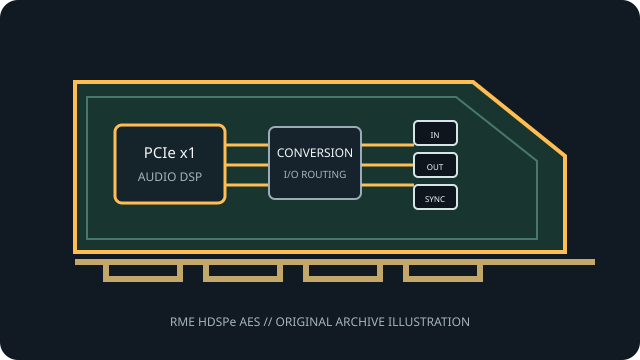

[ PROFESSIONAL AUDIO // PCIe ADD-IN ]
RME HDSPe AES
A professional AES/EBU digital interface designed for broadcast, theater, stage and studio routing, with optional channel expansion.

MODEL SCOPE: RME HDSPe AES. PCIe AES/EBU interface with word clock and optional expansion board for 16 channels per direction at up to 192 kHz. Confirm PCB/IS revision, accessories, slot wiring and current vendor driver before installation.
Model-specific specifications
| Model-specific SKU | RME HDSPe AES |
|---|---|
| Host interface / lanes | PCI Express x1, one-lane endpoint (PCIe 1.1); the expansion board does not consume another PCIe slot. |
| Codec / conversion | Digital AES/EBU transport only: no analog ADC/DAC is documented for the card. TotalMix is a hardware DSP router/mixer rather than an audio codec. |
| Analog I/O | No analog audio inputs or outputs documented; use external AES/EBU converters for analog signals. |
| Digital I/O / protocols | Main card provides four AES stereo inputs and four AES stereo outputs on a 25-pin D-sub breakout, plus word-clock BNC. Optional expansion adds four AES stereo I/O pairs and MIDI I/O via breakout. |
| Resolution / sample rates | 24-bit AES operation supports 44.1–192 kHz, with full channel count at 192 kHz and single-/double-/quad-wire transfer modes; exact channel routing depends on the AES format and breakout. |
| Latency / monitoring | Direct hardware TotalMix routing avoids an application monitoring round trip. Record/playback latency otherwise follows the selected RME driver buffer and host; no universal fixed round-trip value is published. |
| Driver / OS compatibility | RME HDSPe driver and TotalMix suite; consult RME HDSPe DriverKit for supported Windows/macOS releases and legacy OS limitations. |
Compatibility & preservation
AES XLR connections require the correctly pinned Tascam-format D-sub cable/breakout. The optional expansion board adds channels 9–16 and MIDI, and must not be confused with analog I/O.
- Photograph the card label, PCB revision, rear connectors and included breakout cables before service.
- Retain the exact working driver, firmware, operating-system version, clock and routing configuration.
- Confirm lane wiring, bracket clearance, channel map and external converter/network compatibility; connector fit alone is not a compatibility guarantee.
Manufacturer sources
- RME HDSPe AES — manufacturer specificationsManufacturer documentation for this model, driver family or revision.
- RME HDSPe driver-kit compatibility informationManufacturer documentation for this model, driver family or revision.